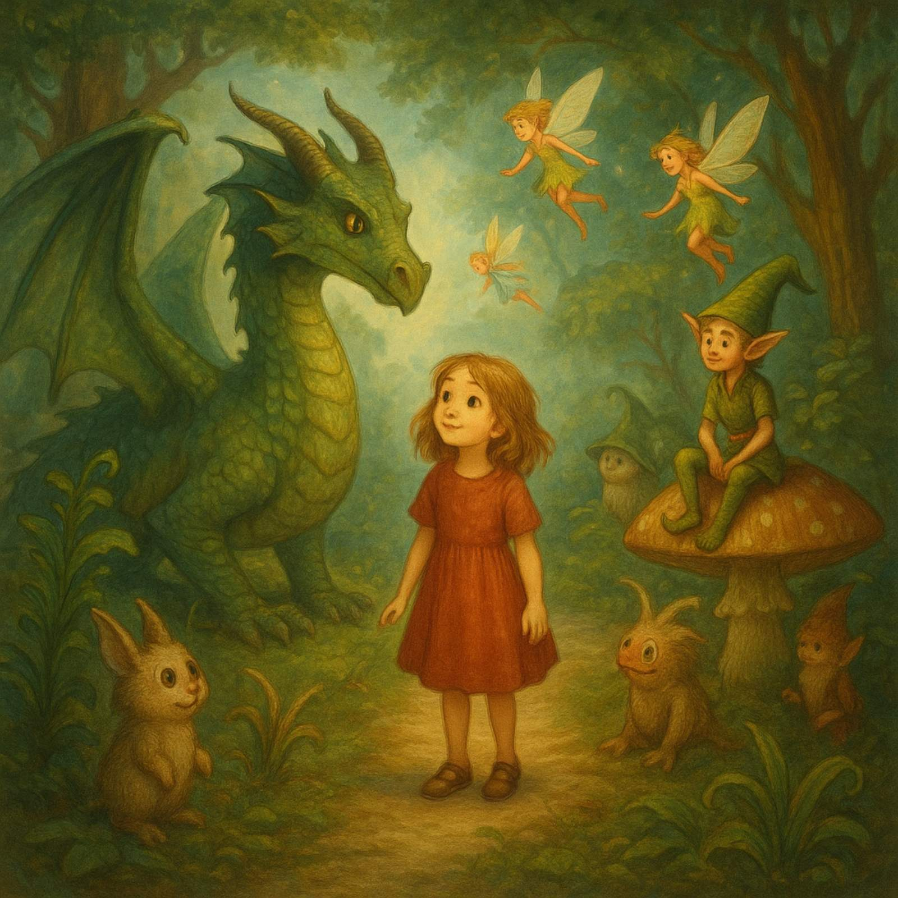
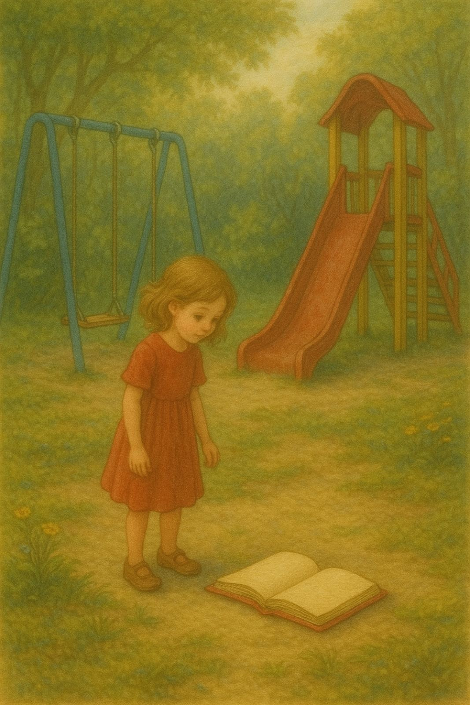
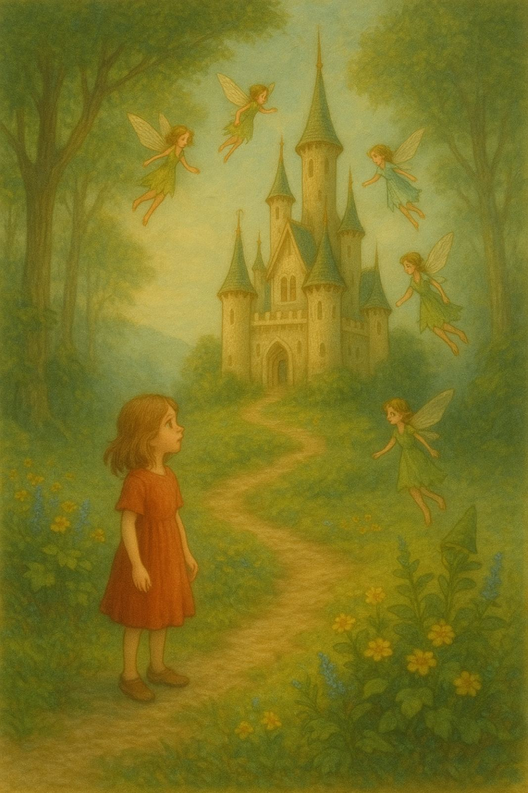

Author: Sofia Basista
When she finished, the forest immediately became real. From the album elves escaped and asked Aja to join them in their magical world. There she spent the whole day in games. In the evening, when the elves sent Aja back home, she promised that she will return to them in her drawings often.
Aja understood that her drawings aren`t just drawings but real portals to different dimensions. She started to travel through her drawings, learning new things.